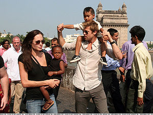

Bollywood
 De: La Frikipedia, la enciclopedia extremadamente seria.
De: La Frikipedia, la enciclopedia extremadamente seria.
| De la serie ciudades del mundo:
|
| Bollywood
|
|
|
|
| (Bandera)
|
(Escudo de armas)
|
|
| Topónimo oficial
|
Esto es ¡¡¡¡¡¡¡¡¡¡Bollywood!!!!!!!!!!!
|
| País
|
 India India
|
| Código postal
|
00000, hay mucha pobreza
|
| Superficie
|
Sucia
|
| Altitud
|
Poca por que tampoco hay presupuesto
|
| Distancia
|
Mucha a pie
|
| Fundación
|
Cuando vieron que se creo el Cine
|
| Población
|
Actores, directores, escritores y bolsas de basura
|
| Gentilicio
|
Figurantes
|
| Alcalde
|
Bollycao Chandra
|
| Aquí es donde nacen los sueños, por muy feos que sean
|
Esta escena representa todo el cine indio.
Esta escena representa todo el cine Indio y la genial idea de utilizar el naranja.
El primer actor Hindú, Pellejo Loco en la película
Rajad el vaquero.
Catering del rodaje
Salvar al soldado Ghandi, el perro tambien es comestible.
Las
ratas amaestradas para el rodaje de
El puente sobre el rio Gangés.
Fotograma de
Fiebre del sabado Hindú.
Película que brilla por su originalidad.
 Los actores Abhishek Bachchan y Karishma Kapoor por las calles de Bombay con sus hijos adoptados.
Bollywood es como Hollywood, pero a lo pobre... pero pobre, pobre de verdad de la buena. El nombre viene por cerca de las 300 películas que se ruedan en Bombay al día, cada producción cuesta unos 140 millones de piastras que al cambio son como 1,50 leros. Si se fusiona Bombay y Hollywood sale Bollywood (por los cojones), que en cristiano significa "boyicao de madera". Aunque a los Yankis les sienta como un tiro porque dicen que mancillan el espíritu del cine que es ganar pasta y no el hacer películas de calidad con muchos colorines. Bollywood es el lugar de la tierra donde se concentran mas actores de cine, no queremos pensar cuando esta gente se pongan a rodar cine prOn...
Bollywood, el comienzo
Todo empezó cuando el primer Indio vio una película de indios y vaqueros, pensó entonces, estos tíos son indios pero no son de la India y yo soy Indio y aqui no hay vaqueros... entonces se le ocurrió dirigir y rodar (de aquí salio el primer director de cine indio) una película que explicase porque desterraron a los vaqueros de la India, pero con muchos bailes y musica chunga de esa India que parece que estan desollando un gato vivo. En un principio la película seria muy modesta (solo pagaban con mendrugos de pan duro, no como en la actualidad, que lo hacen con bocadillos de chope), por entonces el pan duro en 1913 era toda una fortuna, corriéndose la voz por los barrios de chabolas para sumarse en tropel al proyecto como ratas hambrientas. Esta primer film empezó con 9 protatagonistas masculinos (lo normal en las pelis indias) pero llego a tener 17 y 108 feminas. Pero las mujeres se negaron a participar en esta primera película, pensaban que la cámara al grabar les robaba el alma, con lo cual se tuvo que contratar a 108 travestis, de los cuales terminaron la película 42 por causa de desgarros anales en las secuencias de "acción". Al final se termino el film con tres días de retraso debido a un brote de peste negra que diezmo el equipo de producción, quedando de la siguiente manera la ficha tecnica:
- Titulo: Rajad alHarischandra el vaquero
- Año de estreno: 1913
- Duracion: 19 min, 14 de baile y 5 de "accion".
- Pais: La India-Thailandia coproducción, pues se importaron algunnos ladyboy para el rodaje fuerte.
- Director: Chandra Sures
- Guion: no se empezo a utilizar hasta enero de 2009
- Sonido y Musica: muda, pero grabaron en una cassette la musica de Boy George al reves y algun dialogo para ponerlo sincronizado en la proyección.
- Reparto: Aahanal Ahss, Aahleaya Pallaa, Paranjoy Pepe, Rajnikant, Sahasya de Omhiate, Rocco Sigfredi...
- Productora: Panificadora Haali S.A / Lubricantes Elhensanche C.L
- Sinopsis: Rajad es un indio que quiere ser vaquero, tras la tragica muerte de su abuelo mientras le espiaba en la ducha (al puro estilo de Clerks II), decide vender su cuerpo en la calle y reunir el dinero para comprarse un disfraz de vaquero e irse al salvaje oeste para matar indios, lo cual le traera un sin fin de problemas.
Estudios de Bollywood
Bollywood cuenta con 12 megaestudios repartidos entre los basureros de la ciudad, de ahi sacan todos los materiales para realizar los escenarios, decorados, vestuario y tambien el catering del rodaje. Nunca ningun estudio se queda vacio, pues se ruedan mas de 1000 películas al año, cada dia se ruedan, maquetan, rematan y finalizan tres películas, lo cual da una idea se su calidad. Es el motor económico de Bombay. Por ejemplo: un tecnico de sonido puede ganar entre 1 y 3 mendrugos de pan, un realizador 3 mendrugos de pan y un papel de madalena, y un director de cine !!una madalena entera para el solo¡¡. Hasta el 2008 donde el sueldo minimo se estableció en un bocadillo de chope, lo cual subió mucho los costes de producción de las películas, lo cual facilito que los niños dejaran las fabricas de deportivas Mike para trabajar en los estudios como G.I Joes.
Características de una película de Bollywood
- El tema: da igual que sea un drama histórico-épico, de ciencia-ficción al estilo de Star Trek o un documental sobre la ciudad del Baticano, tiene que haber bailes coreografiados multitudinarios (si repites estas tres palabras tres veces seguidas muy rapido, estaras hablando hoygan) por todos sitios.
- Vestuario: todos con ropa hindú, se esta rodando Matrix ReCalcuta y la que hace de Trinity, en vez de llevar ropas ajustadas de cuero... mmm..., lleva un burka, joder no se le ve ni el pescuezo.
- Peluqueria: nunca, nunca jamas de los jamases se a visto a un actor de Bollywood con el pelo sin gomina (en cantidades industriales) o laca (explicación del agujero de ozono).
- El amor: el protagonista siempre se casa con la chica, siempre triunfa el amor. Se dio el caso del estreno de una película donde los protagonistas solo quedan como amigos, esto origino el apaleamiento del director y la consiguiente canibalizacion del mismo.
- Duración: el film tiene que durar un minimo de 4 horas para que sea agradable de ver, esta es la causa del aumento de natalidad en las salas de cine de la India y donde se practican la mayoria de autopsias.
Remakes de Bollywood
- Bailando con Indios: refrito Hindú que cuenta la historia de Peter, un caballo salvaje al que un tio se le sube en la chepa y le obliga a correr por la pradera para llegar a tiempo a un baile en un granero lleno de Indios peyejos que se disparan con arcos y flechas. Curiosamente paso a la historia como la unica película producida en Bollywood donde no baila nadie.
- Salvar al soldado Ghandi: ambientada en la guerra de independencia de la India, el soldado Ghandi desaparece en una incursión en territorio enemigo Inglaperro, el mando del ejercito de liberación jindio, tras descubrir que Ghandi es el unico hijo en pañales y calvo que le queda a la Madre Teresa de Calcuta, manda una escuadra de bailarines de break-dance que tendrán que bailar o morir hasta encontrarle y traerlo de vuelta.
- El puente sobre el rio Ganges: un grupo de malvados ingenieros planean construir un puente en el rio para no tener que cruzarlo nadando, pues los lugareños quemaban a sus muertos y arrojaban al rio los restos, siendo esto peligroso, pues se enganchaban con los esqueletos que los arrastraban al fondo. Esta película reclama el derecho de los Indios a bañarse en agua con restos humanos calcinados sin que nadie los juzgue (ni siquiera la Organización Mundial de la Saluz).
- Fiebre del sábado Hindú: Tras seis días de trabajo en una tienda de pinturas de Calcuta, Tony Chandranero se empapa en agua humana del Ganges, se pone una camisa de flores ajustada, pantalones de tela de gabardina mas ajustados todavía y sandalias de plataforma, y se prepara para bailar en el burdel gay de moda, donde es la reinona y todos le adoran.
- Hari Puttar: Hari es un niño que viaja a Inglaperra para irse de putas con su tío Jagrid al burdel de viejas mas famoso de Londres, llamado Coguards, donde tras coger la sífilis tendrá que luchar a miembro partido contra Poldemor para conseguir el ultimo frasco de penecilina.
Actores de Bollywood (en sus casas los conocerán)
Todo el mundo piensa, que nombres mas chulos se inventa para el articulo... juro por la salvación de mis nietos que los nombres son reales.
- Abhishek Bachchan: el actor mas afamado de la India, a la altura de Braz Pitt, a ganado 91 mOscar de 169 películas que rodo la semana pasada.
- Karishma Kapoor: tiene mucho carisma, es como la Angelina Jolie de alli, rodo junto a Abhisek la película Sr y Mrs Smitrhandra. Durante ese rodaje se caso con el, y tiene adoptados 1024 niños.
- Preity Zinta: salto a la fama al rodar " Preity Guoman " junto con Gandhi Gere.
- Sharuk Khan: hijo menor del director Ghengis Can, es famoso por la saga " La guerra de las Gihndaxias " al hacer el papel de nave especial imperial.
Las megacita Bollywoodienses

|
La segunda ciudad de la India (después de Nueva Delhi, la capital) es Bombay, anglicismo del nombre dado por sus fundadores portugueses “Bom Bahia” por ser un lugar ideal donde atracar sus barcos en la ruta hacia “Las Indias”. Allí hay una industria realmente curiosa, BOLLYWOOD, meca del peculiar cine indio destinada casi únicamente al consumo interno, aunque un mercado de !! 1000 millones de espectadores no es nada desdeñable!!.
|

|
| Un periodista.
|
|
|
Los filmes suelen tener una duración de 3 a 4 horas (en la India hay que amortizar la entrada!!) con intermedio publicitario incluido, en ese espacio de tiempo han muerto generaciones enteras. Una sola película nos permite pasar por casi todos lo estados de ánimo, hay humor, baile, acción, baile, drama, suspense y sobretodo amor con baile y final feliz, aunque siempre carente de sexo oral (el prota no besa a su amada... en la boca...!!).
|
|
| Un señor con bigote.
|
Autor(es):
- Fordus
- Alex el Mono
- Bladguer
- Milongas
- Genericool
- Shadowmura
- Trollface9
- Generibot
Frikipedia 2005-2016, Licencia
GFDL 1.2 - Extraído por FrikiLeaks